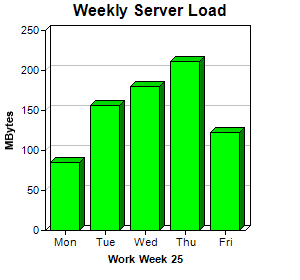

This example demonstrates using Layer.set3D to set the bars to 3D style.
ChartDirector 7.1 (C++ Edition)
3D Bar Chart
Source Code Listing
#include "chartdir.h"
int main(int argc, char *argv[])
{
// The data for the bar chart
double data[] = {85, 156, 179.5, 211, 123};
const int data_size = (int)(sizeof(data)/sizeof(*data));
// The labels for the bar chart
const char* labels[] = {"Mon", "Tue", "Wed", "Thu", "Fri"};
const int labels_size = (int)(sizeof(labels)/sizeof(*labels));
// Create a XYChart object of size 300 x 280 pixels
XYChart* c = new XYChart(300, 280);
// Set the plotarea at (45, 30) and of size 200 x 200 pixels
c->setPlotArea(45, 30, 200, 200);
// Add a title to the chart
c->addTitle("Weekly Server Load");
// Add a title to the y axis
c->yAxis()->setTitle("MBytes");
// Add a title to the x axis
c->xAxis()->setTitle("Work Week 25");
// Add a bar chart layer with green (0x00ff00) bars using the given data
c->addBarLayer(DoubleArray(data, data_size), 0x00ff00)->set3D();
// Set the labels on the x axis.
c->xAxis()->setLabels(StringArray(labels, labels_size));
// Output the chart
c->makeChart("threedbar.png");
//free up resources
delete c;
return 0;
}